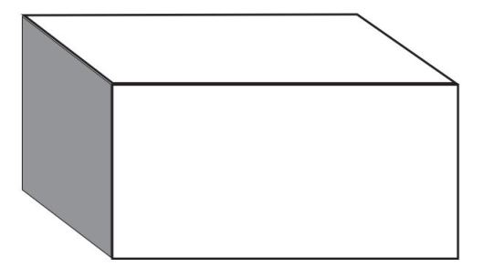
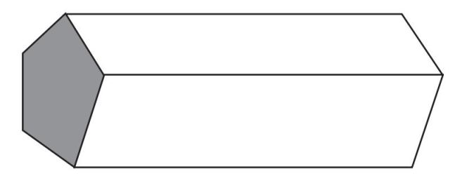
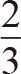
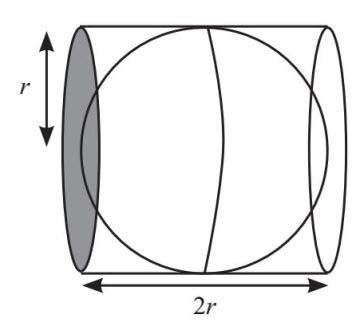
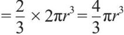
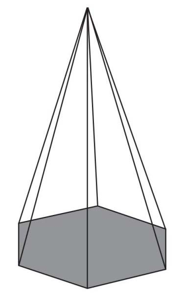
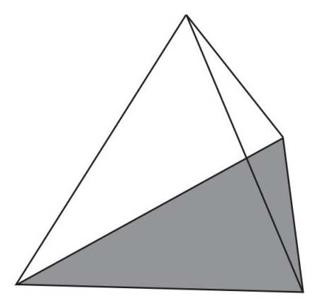
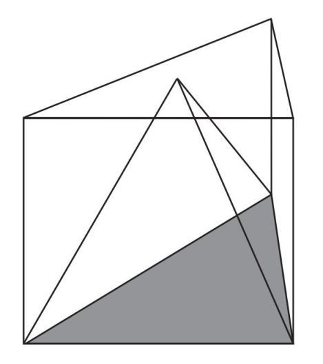
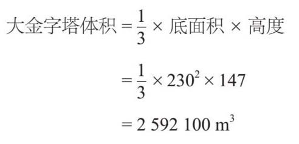

。金字塔的体积=
×面积×长度。在这里，金字塔以棱柱体的一个面作为底面，长度就是高度，所以我们可以把公式改写为：
。金字塔的体积=
×面积×长度。在这里，金字塔以棱柱体的一个面作为底面，长度就是高度，所以我们可以把公式改写为：物体的体积是指它在三个维度上占据或包围的空间。任何具有直边的固体被称为多面体。长方体是一种最简单的多面体，它的体积等于长度、宽度和高度的乘积。此外，我们还可以用长方体的底面积乘以高度来求解体积。
我们可以将这个原理扩展到截面恒定的任何形状。这种形状被称为棱柱体：


对于这两个棱柱体，我们可以通过计算阴影部分面积再乘以棱柱体的长度来求得体积。我们在前文中知道了面积的求法，所以棱柱体体积的计算不算难事。
当涉及曲线形的物体时，我们可以参考第18章的内容。阿基米德算出一个球体的体积是将它完全包住的圆柱体体积的

：
我们可以把圆柱体当作棱柱体。阴影部分的面积是πr 2 ，把它与棱柱体的长度，即2r 相乘，即可得：
圆柱体体积=πr 2 ×2r =2πr 3
为了求出球体的体积，我需要把上面的计算结果乘以
球体体积

将一个平面的各个端点向上连接，汇聚到同一个点上所形成的形状就称为金字塔。例如，我们可以先从六边形开始，绘出六边形的金字塔。

如果从一个等边三角形出发，可以得到一个三角形的金字塔，也称为四面体：

与球体一样，金字塔的体积与将其包围的棱柱体体积之间也存在类似的关系：

阿耶波多最先发现金字塔的体积是棱柱体体积的
。金字塔的体积=
×面积×长度。在这里，金字塔以棱柱体的一个面作为底面，长度就是高度，所以我们可以把公式改写为：
金字塔体积=
×底面积× 高度
埃及的吉萨金字塔就是方形金字塔，其中最大的一座被称为大金字塔，它的体积也的确巨大。它的底面各边长度为230米，第一次建造时就有147米高，把已知数据代入体积的计算公式就可以算出：

我们不妨对比一下，目前世界上最高的建筑哈利法塔（Burj Khalifa）的体积大约为160万立方米。考虑到大金字塔比哈利法塔早4 500年建成，而且不是用机器建造，毫无疑问，其规模可谓令人叹为观止。
当我们要计算不太规则的物体体积时，有几种方法供选择。我们可以将不规则物体分割成已知形状的组合，也可以利用阿基米德原理来计算体积。传说，阿基米德曾受命鉴定锡拉丘兹国王委托打造的王冠是否是用他赐予的全部黄金制造的。国王担心一些黄金被换成了铅或银，这样珠宝商就可以从中得到好处，而王冠的重量则保持不变。
最简单的方法就是将王冠熔化，并将它的体积与所提供的黄金体积进行比较。然而，阿基米德是被禁止以任何方式伤害王冠的[此书分享微 信jnztxy]。
阿基米德辛苦地工作了一天之后，在浴缸里洗了个澡，这时他意识到自己的身体代替了水。因此，他可以通过观察变化的水量来计算王冠的体积。他高兴地跑到街上喊：“尤里卡！”（希腊语，意思是：我找到了！）却因过度兴奋，而忘了穿上衣服。
他在第二天做了一个实验，证明珠宝商确实做了手脚。